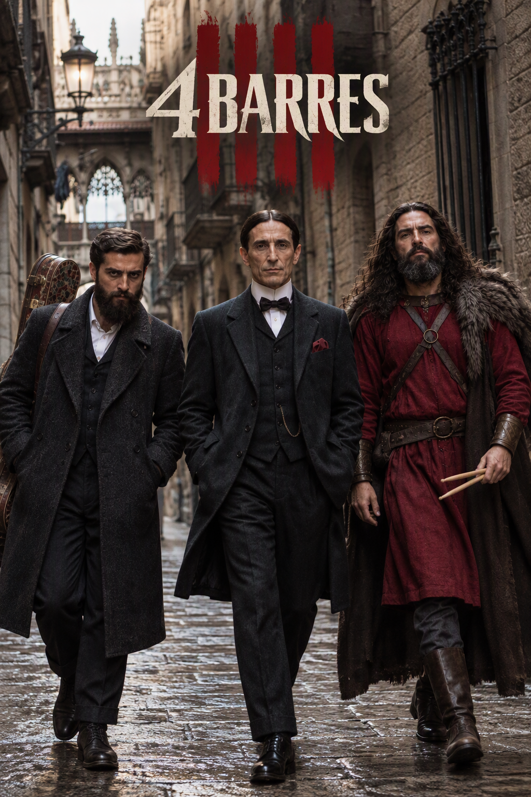
La sèrie
La sèrie «4 Barres»: tres èpoques, una sola Catalunya
Antoni Gaudí, Pompeu Fabra i Guifré el Pilós apareixen misteriosament a la Barcelona del segle XXI sense saber qui els hi ha portat ni per què.
Obligats a compartir pis, els tres intenten adaptar-se a una Catalunya que reconeixen i, alhora, els resulta completament desconeguda. Els preus del lloguer, la situació del català, el turisme, les noves tecnologies, les aplicacions per lligar i el transport públic posaran a prova les seves idees, les seves certeses i la seva convivència.
Entre malentesos, xocs d'època i una amistat inesperada, els tres buscaran la manera de tornar al seu temps mentre intenten entendre què ha canviat a Catalunya i què continua exactament igual.
Disponible a Netflix
Mira la sèrie a NetflixCapítols
Disponible a Netflix
-
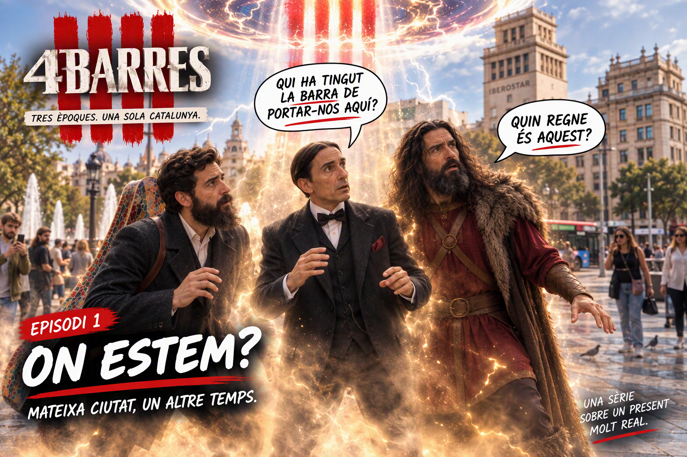
Capítol 1 — «On estem?»
Els tres llegendes es desperten en un pis del segle XXI.
-
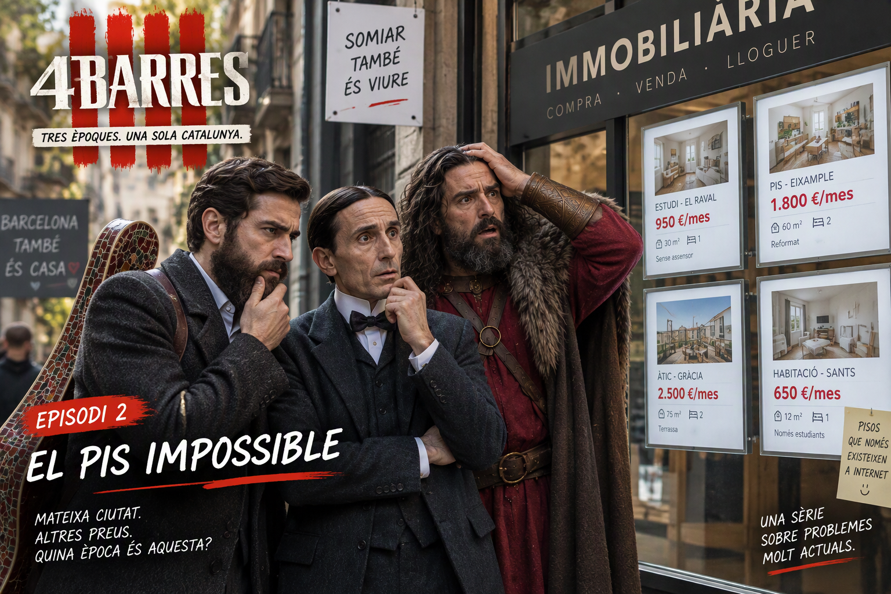
Capítol 2 — «El pis impossible»
El repte de la vida moderna: un «cafè amb llet» i l'aigua de Vichy.
-
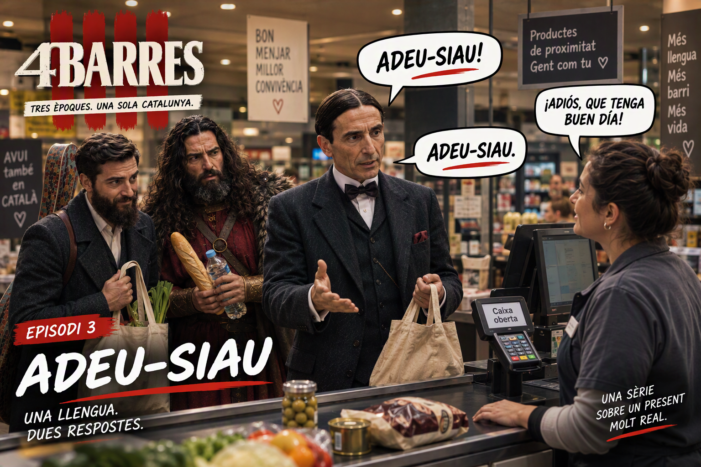
Capítol 3 — «Adeu-siau»
Un «adiós» a la caixa del supermercat desencadena la batalla de la llengua.
-
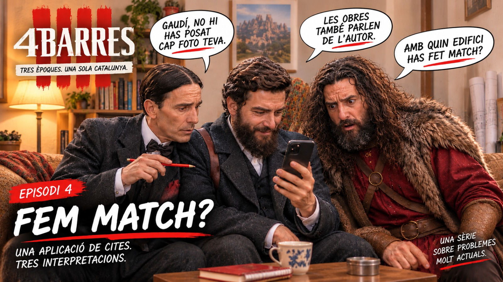
Capítol 4 — «Fem match?»
Una aplicació de cites, tres interpretacions i cap foto de perfil que convenci.
-
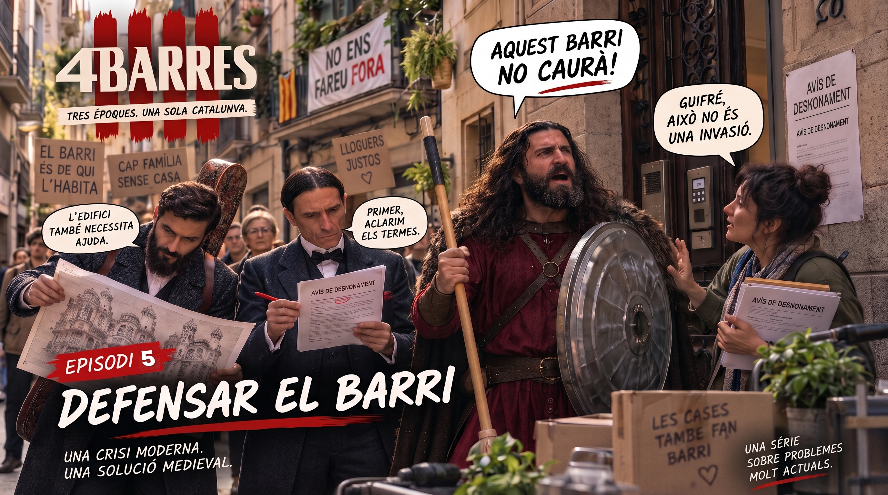
Capítol 5 — «Welcome to Barcelona»
La veïna nova vol aprendre català; la mudança, això sí, serà un calvari.
-
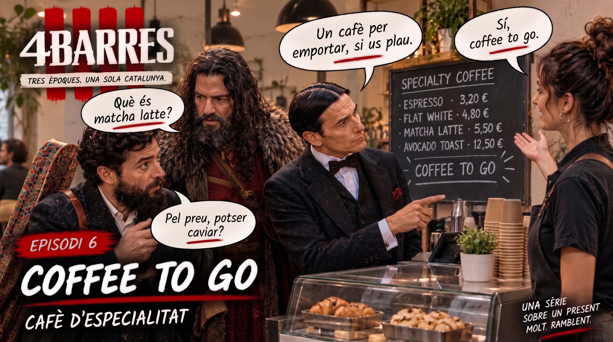
Capítol 6 — «Coffee to go»
Un cafè amb llet a 3,20: la prova de foc del segle XXI.
-
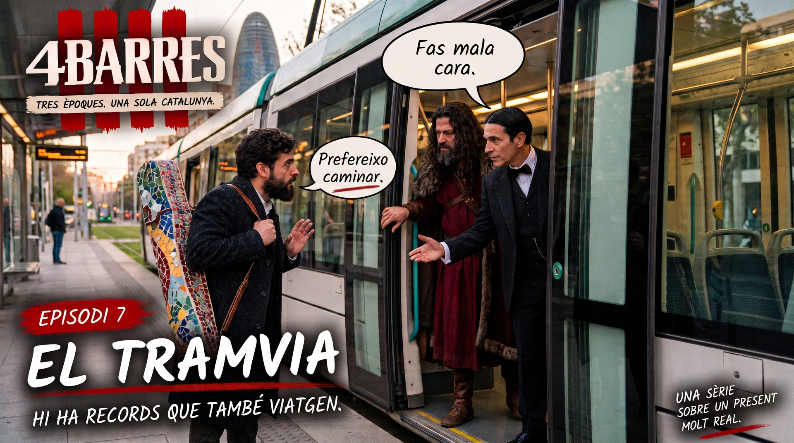
Capítol 7 — «El tramvia»
Un viatge en tramvia es converteix en lliçó d'història… i de barra.
-
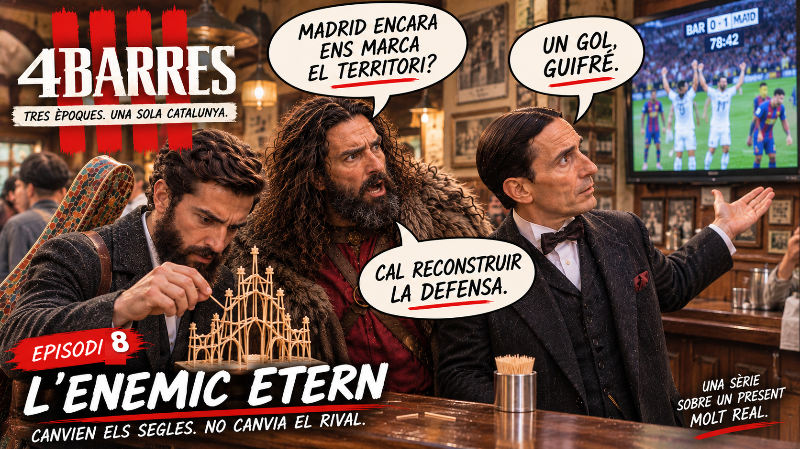
Capítol 8 — «L'enemic etern»
Un partit de futbol al bar posa a prova l'amistat dels tres.


El repartiment
-
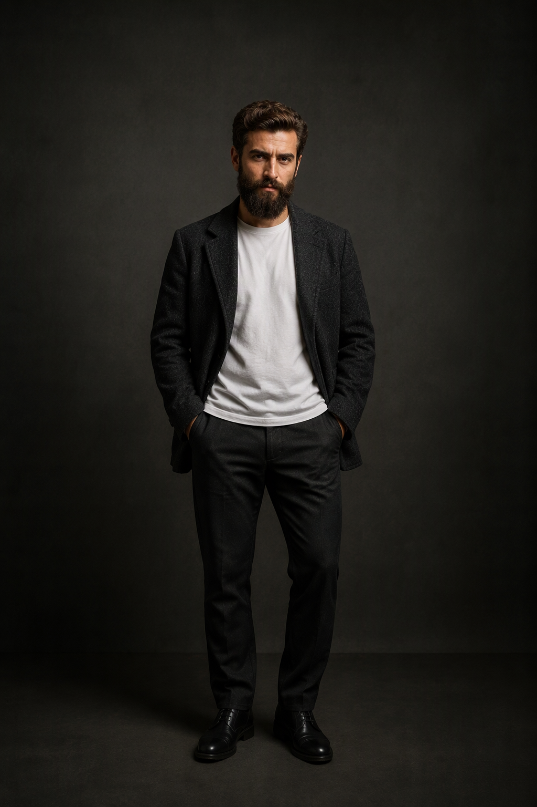
Antoni Gaudí -
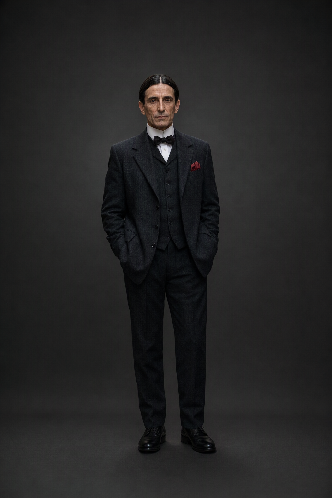
Pompeu Fabra -
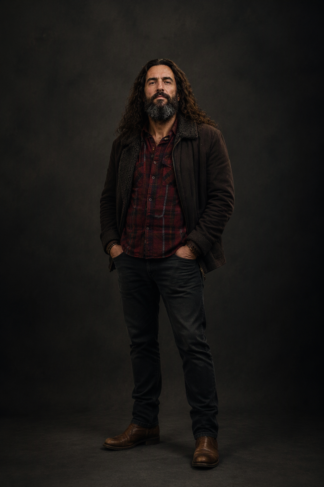
Guifré el Pilós -
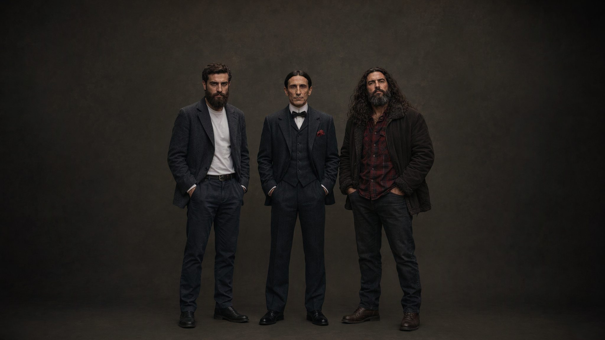
El repartiment de «4 Barres»